E AANWIJZINGSTEKENS
Rijnvaartpolitiereglement 1995
E.1 | In-, uit- of doorvaren toegestaan (algemeen teken).(artikelen 3.25, lid 1, onder a, 6.08, lid 2, 6.27, lid 2, en 6.28a) | 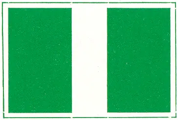 |
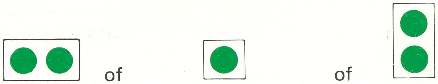 | ||
E.2 | Hoogspanningslijn. | 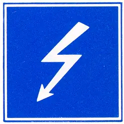 |
E.3 | Stuw | |
E.4a | Niet-vrijvarende veerpont. | 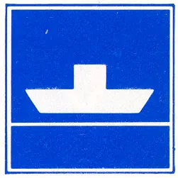 |
E.4b | Vrijvarende veerpont | |
E.5 | Toestemming ligplaats te nemen aan de zijde van de vaarweg waar het bord is aangebracht. (artikel 7.05, lid 1) | 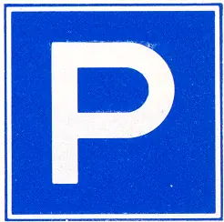 |
E.5.1 | Toestemming ligplaats te nemen tot ten hoogste de aangegeven breedte, in meters gerekend vanaf het bord. (artikel 7.05, lid 2) | 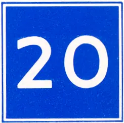 |
E.5.2 | Toestemming ligplaats te nemen tussen de aangegeven afstanden, in meters gerekend vanaf het bord. (artikel 7.05, lid 3) | 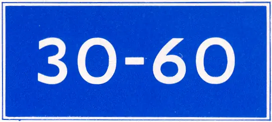 |
E.5.3 | Toestemming ligplaats te nemen met ten hoogste het aangegeven aantal schepen langszijde van elkaar, aan de zijde van de vaarweg waar het bord is aangebracht. (artikel 7.05, lid 4) | 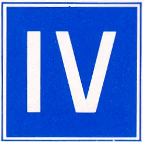 |
E.5.4 | Toestemming ligplaats te nemen uitsluitend voor duwvaart die geen tekens bedoeld in artikel 3.14 behoeft te voeren, aan de zijde van de vaarweg waar het bord is aangebracht. (artikel 7.06, lid 1) | 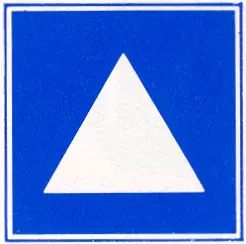 |
E.5.5 | Toestemming ligplaats te nemen uitsluitend voor duwvaart die een teken bedoeld in artikel 3.14, eerste lid, moet voeren, aan de zijde van de vaarweg waar het bord is aangebracht. (artikel 7.06, lid 1) | 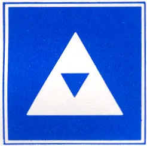 |
E.5.6 | Toestemming ligplaats te nemen uitsluitend voor duwvaart die de tekens bedoeld in artikel 3.14, tweede lid, moet voeren, aan de zijde van de vaarweg waar het bord is aangebracht. (artikel 7.06, lid 1) | 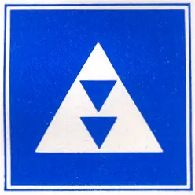 |
E.5.7 | Toestemming ligplaats te nemen uitsluitend voor duwvaart die de tekens bedoeld in artikel 3.14, derde lid, moet voeren, aan de zijde van de vaarweg waar het bord is aangebracht. (artikel 7.06, lid 1) | 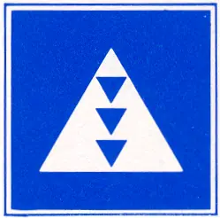 |
E.5.8 | Toestemming ligplaats te nemen uitsluitend voor andere schepen dan duwvaart die geen tekens bedoeld in artikel 3.14 behoeven te voeren, aan de zijde van de vaarweg waar het bord is aangebracht. (artikel 7.06, lid 1) | 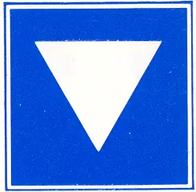 |
E.5.9 | Toestemming ligplaats te nemen uitsluitend voor andere schepen dan duwvaart die een teken bedoeld in artikel 3.14, eerste lid, moeten voeren, aan de zijde van de vaarweg waar het bord is aangebracht. (artikel 7.06, lid 1) | 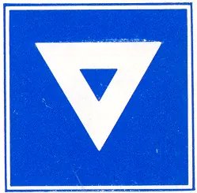 |
E.5.10 | Toestemming ligplaats te nemen uitsluitend voor andere schepen dan duwvaart die de tekens bedoeld in artikel 3.14, tweede lid, moeten voeren, aan de zijde van de vaarweg waar het bord is aangebracht. (artikel 7.06, lid 1) | 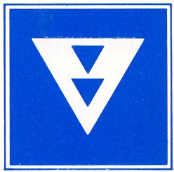 |
E.5.11 | Toestemming ligplaats te nemen uitsluitend voor andere schepen dan duwvaart die de tekens bedoeld in artikel 3.14, derde lid, moeten voeren, aan de zijde van de vaarweg waar het bord is aangebracht. (Artikel 7.06, lid 1) | 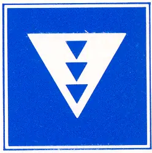 |
E.5.12 | Toestemming ligplaats te nemen uitsluitend voor schepen - zowel duwvaart als andere schepen dan duwvaart - die geen tekens bedoeld in artikel 3.14 behoeven te voeren, aan de zijde van de vaarweg waar het bord is aangebracht. (artikel 7.06, lid 1) | 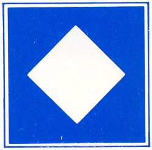 |
E.5.13 | Toestemming ligplaats te nemen uitsluitend voor schepen - zowel duwvaart als andere schepen dan duwvaart - die een teken bedoeld in artikel 3.14, eerste lid, moeten voeren, aan de zijde van de vaarweg waar het bord is aangebracht. (artikel 7.06, lid 1) | 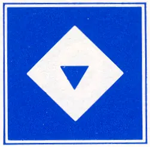 |
E.5.14 | Toestemming ligplaats te nemen uitsluitend voor schepen - zowel duwvaart als andere schepen dan duwvaart - die de tekens bedoeld in artikel 3.14, tweede lid, moeten voeren, aan de zijde van de vaarweg waar het bord is aangebracht. (artikel 7.06, lid 1) | 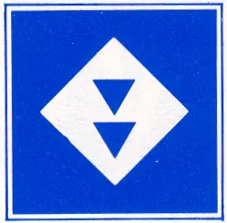 |
E.5.15 | Toestemming ligplaats te nemen uitsluitend voor schepen - zowel duwvaart als andere schepen dan duwvaart - die de tekens bedoeld in artikel 3.14, derde lid, moeten voeren, aan de zijde van de vaarweg waar het bord is aangebracht. (artikel 7.06, lid 1) | 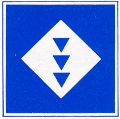 |
E.6 | Toestemming te ankeren aan de zijde van de vaarweg waar het bord is aangebracht. (artikel 7.03, lid 2) | 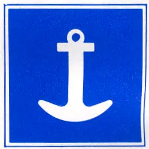 |
E.6.1 | Toestemming gebruik te maken van spudpalen aan de zijde van de vaarweg waar het bord is aangebracht. (artikel 7.03 lid 3) | 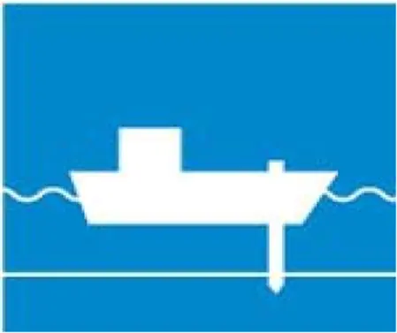 |
E.7 | Toestemming te meren aan de zijde van de vaarweg waar het bord is aangebracht. (artikel 7.04, lid 2) | 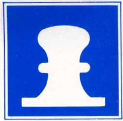 |
E.7.1 | Toestemming te meren voor het onmiddellijk van of aan boord zetten van een auto. (artikel 7.04, lid 2) | |
E.8 | Plaats om te keren. (artikelen 6.13 en 7.02, lid 1, onder i) | 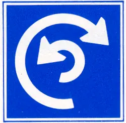 |
E.9 | a. De gevolgde vaarweg geldt als hoofdvaarweg ten opzichte van de vaarweg die daarin uitmondt. (artikel 6.16, lid 1) | 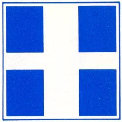 |
b. idem. | 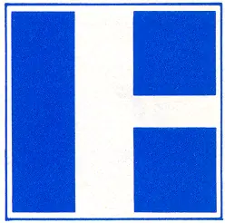 | |
c. idem. | 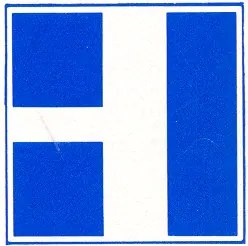 | |
E.10 | a. De gevolgde vaarweg geldt als nevenvaarweg ten opzichte van de vaarweg waarin hij uitmondt. (artikel 6.16, lid 1) | 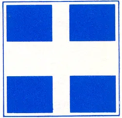 |
b. idem. | 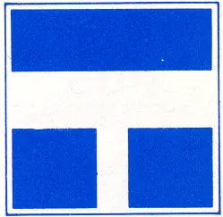 | |
E.11 | Einde van een verbod of een gebod geldend voor één richting of einde van een beperking. | 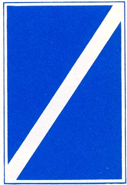 |
E.12 | niet overgenomen | |
E.13 | Drinkwater voor schepen. | 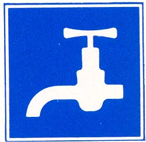 |
E.14 | Telefoon. | 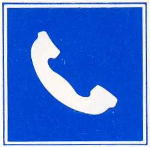 |
E.15 | niet overgenomen | |
E.16 | niet overgenomen | |
E.17 | Waterskiën toegestaan. | 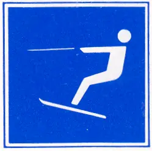 |
E.18 | Zeilschepen toegestaan. | 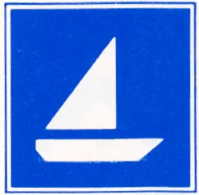 |
E.19 | Door spierkracht voortbewogen schepen toegestaan. | 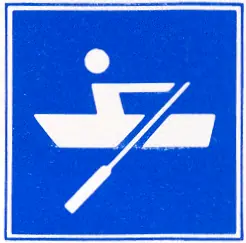 |
E.20 | Zeilplanken toegestaan. | 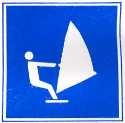 |
E.21 | Marifoonkanaal voor nautische informatie. Voorbeeld: kanaal 18 | 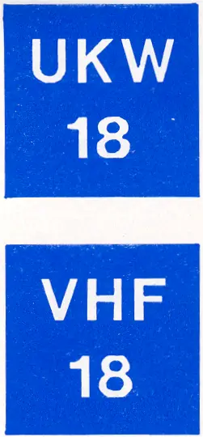 |
E.22 | Waterscooters toegestaan. | 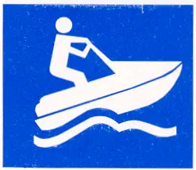 |
E.23 | Hoogwaterpeilen. (artikel 10.01) Peil I Maatgevende waterstand | 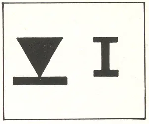 |
Peil II Maatgevende waterstand De aanduidingen zijn in lichte kleur op donkere ondergrond of in donkere kleur op lichte ondergrond aangebracht. | 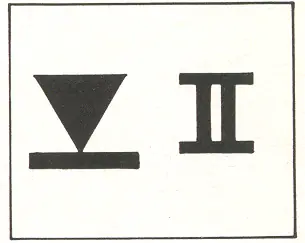 | |
E.24 | niet overgenomen | |
E.25 | aansluiting voor walstroom beschikbaar |